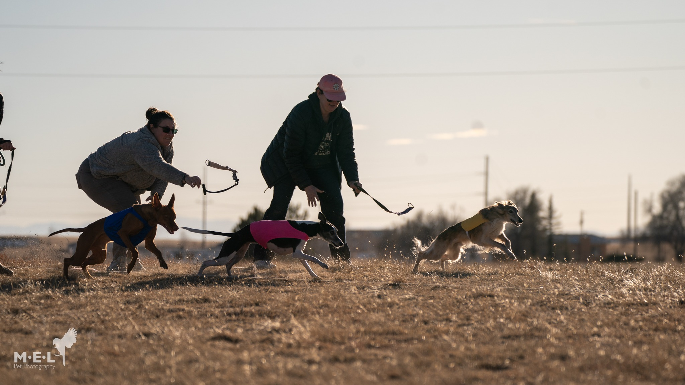
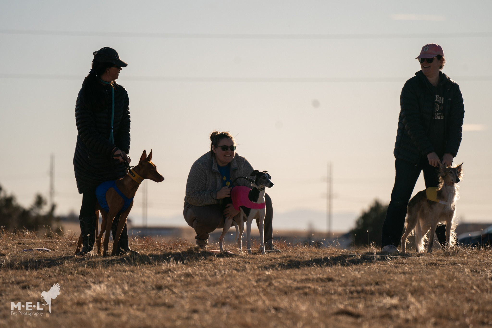

A Beginner's Guide to Lure Coursing
This brief introduction to lure coursing and the American Sighthound Field Association is intended for people unfamiliar with the sport. We hope it answers most of your questions, and helps you and your sighthound enjoy lure coursing. The ASFA Web site listed at the end of this pamphlet can send you further information.
Table of Contents
- What is lure coursing?
- Will my sighthound like it?
- How do I get started?
- What dogs are eligible?
- Former racing Greyhounds
- Getting my sighthound started
- Learning about lure coursing
- What's a trial like?
- Out on the field
- Earning lure coursing titles
- How do I enter a trial?
- What to do at the trial?
- How judges score hounds
- Running more than one hound
- Running in hot weather
- Training to chase a lure
- History of lure coursing
- How ASFA is organized
- How to get involved
- Learning the Running Rules
- Where to find out more
What is lure coursing?
Sighthound breeds have an overpowering instinct to chase. Lure coursing presents an opportunity for them to chase a lure just for their own pleasure, and is meant to simulate the pursuit of prey in the open field. Lure courses are usually between 500 and 1000 yards in length, but can be longer. The course is designed by placing small pulleys around a field in a pattern meant to resemble the route prey might take when pursued by hounds. Usually, a continuous loop of braided string is pulled around the pulleys by a wheel attached to a motor, and the lure itself is a piece of plastic. An experienced lure operator can control the lure so as to simulate escaping game. Since 1972, in this way, the American Sighthound Field Association has provided the joy of the chase to thousands of sighthounds!
Will my sighthound like lure coursing?
There are no guarantees. But you can only find out by giving your hound a chance to chase the lure. Sometimes youngsters may not show great interest at the first opportunity, but the next time something can click and they're off! Adult hounds sometimes could care less, but others respond immediately. Some hounds just don't care to chase a piece of plastic, and that's all there is to it. Other hounds enjoy chasing the plastic lure, but would prefer to chase another hound. Competitive lure coursing is not for them until they become more focused, but until then they can chase the lure by themselves in the Singles Stake.
How do I get started?
Find other people experienced in your breed to lend a hand. Most are very willing. In addition, find a lure coursing club in your area by exploring the ASFA Web site. Many clubs have a practice for novice hounds after their Saturday trials.

What dogs are eligible?
Only purebred Afghans, Azawakhs, Basenjis, Borzoi, Greyhounds, Ibizan Hounds, Irish Wolfhounds, Italian Greyhounds, Pharoah Hounds, Rhodesian Ridgebacks, Salukis, Sloughis, Scottish Deerhounds, and Whippets are eligible. All entries must be individually registered with the AKC, CKC, NGA, or an AKC recognized foreign registry or possess a Critique Case Number from the Saluki Club of America. Your hound's registration number is required on all entry forms. Spayed or neutered sighthounds are eligible, but bitches in season or lame hounds are prohibited from running. Also, any sighthound disqualified from running is not eligible.
If I own a former racing Greyhound, what do I do?
If you can read your former racer's ear tattoos or you have his registered name, contact the National Greyhound Association at 785-263-4660 or at nga@ngagreyhounds.com with this information, and ask for his "certificate number" and "volume number." These numbers must be listed on all field trial entry forms.
Sometimes it's not possible to get the NGA volume and certificate number for a former racing Greyhound. If so, you can apply to the AKC for an Indefinite Listing Privilege (ILP) number. Contact the AKC at 919-233-9767 and have them send you an application, or print one from the AKC Web site at http://www.akc.org/pdfs/ilpform.pdf. With your application, you will have to include several photos of your Greyhound, and then wait several weeks for your ILP number.
The racing organization & registry:
National Greyhound Association
P.O. Box 543
Abilene, KS 67410
(913) 263-4660
AKC Registration & ILP number:
American Kennel Club
5580 Centerview Drive
Raleigh, NC 27606
(919) 233-9767
How do I get my sighthound started?
First you must practice your hound to make certain it is interested in chasing the lure. Once you've practiced your hound in this way-and experienced observers have assured you that your hound is very keen, not just mildly interested-your hound is ready for certification, provided it is at least eleven months of age. Novice hounds must be certified by running on the lure with another sighthound of the same breed, or one with a similar running style. A licensed ASFA judge must observe this run. Unless your hound already has another qualifying coursing title from the open field or elsewhere, an ASFA certification form must be signed by the judge and a copy must be submitted when you enter your hound in a trial for the first time. In addition, a copy of your hound's registration should be included with its first entry.
What is the best way to learn about lure coursing?
Observe a trial. Watch for a while, and then look for someone to chat with about the sport. Seek people who seem generally friendly and sociable. It might be someone in your own breed or another breed. At many trials there's a Paddock person knowledgeable about the sport. This is the person who calls out the hounds' names when it's time for them to be ready for the course. The Field Trial Secretary listed in the premium can also suggest someone for you to meet.
Always understand that, as in any sport, much so-called knowledge may simply be opinion. It takes years of experience to assemble an understanding of the sport, and you won't learn everything there is to know from one person or from attending a handful of trials. Experience is the best teacher.
Often the best way to learn is by observation. Notice the way owners prepare their hounds. Some walk their hounds extensively long before they run, so as to loosen muscles (and hopefully empty the hound's bladder and bowels). Some even trot with their hounds. They should also have everything ready that they'll need-the proper blanket color and a slip lead, and water and a wetdown blanket if it's a hot day.
You may notice that breeds are prepared in different ways. Afghan owners sometimes wrap the coat of their hounds. Whippet and Greyhound owners sometimes tape the feet of their hounds to protect toes. But you must know what you're doing. Therefore, look for experienced mentors who can help you learn. You'll find that lure coursing people are competitive, but very helpful.
What's a trial like?
For the field committee, the work begins early, setting up the field and getting the paperwork in order. For competitors, the trial begins at roll call, where hounds are checked for lameness or any breed-specific disqualifications. A Whippet, for example, can be disqualified for failure to meet standards of height and eye color. Also at roll call, bitches are checked to make certain they are not in season. Hounds who do not pass roll call receive a refund of their entry fee, but if you are late for roll call, you forfeit entry fees. Never take a bitch in season to a lure coursing trial, either to compete or to walk anywhere near the grounds.
What's happening out on the field?
Observe that the hounds run only against their own breed, and they run in trios with different color blankets. Yellow always starts on the left, pink in the middle, and blue on the right. The judges on the field score each course. These scores are checked by Field Clerks, and then the Field Trial Secretary posts the scores on record sheets. The hounds run two courses to determine their final scores. The first course is called a preliminary (or prelim), and the second a final-even though there may be ties and run-offs that require further courses for hounds placing in the top five for their breed. Finally, there's usually a Best in Field (BIF) run for any breed winners who choose to run for that honor.
Can my hound earn lure coursing titles?
Sighthounds love to run just for the fun of the chase. They have no idea how they've been judged or whether they've earned any points or a title. But most people enjoy earning titles on their hounds, especially if they have an exceptional specimen of their breed. ASFA offers several titles-a Field Championship (F.Ch.), the title of Lure Courser of Merit (LCM), and several levels of LCM. To earn titles, your hound must earn points at trials. There are even titles to be earned if your hound is a veteran, running in the Veteran Stake (for more information on this stake and its titles, see the Running Rules).
In the breed runs, ribbons and points are awarded as follows, with a total maximum of 40 points per trial:
- 1st Place - 4 x number of hounds competing (40 max)
- 2nd - 3 x number of hounds competing (30 max)
- 3rd - 2 x number of hounds competing (20 max)
- 4th - 1 x number of hounds competing (10 max)
- NBQ - Next Best Qualifier (no points)
In other words, a hound finishing second in a field of 8 hounds would earn 24 points, etc. There are no points for winning Best in Field, just a special ribbon.
Field Championship (FCh)
Until a hound earns 100 points total (including two first placements or one first placement and two seconds, against competition) to get its Field Championship, it must run in the Open Stake. When the Field Championship is earned, the FCh suffix can be added to your hound's name.
At a trial, the winning hound in the Open Stake and winning hound in the Field Champion Stake and the winning hound in the Veteran Stake run against each other to determine Best of Breed. Whichever hound wins could possibly earn the points of the defeated hound, if the point total is larger than what was earned in its own stake. For example, if there were only 6 hounds in the Open Stake, but 8 in the Field Champion Stake, and the Open Stake winner defeated the Field Champion Stake winner to take Best of Breed, the Open hound would be credited with winning the same number of points as the Field Champion-in this case, 32 points (4 points x 8 hounds). The Field Champion wouldn't lose those points, however, because it won its stake.
Lure Courser of Merit (LCM)
After a hound has earned its Field Championship, it can begin to accumulate points toward the title Lure Courser of Merit. To earn the LCM suffix, a hound must accumulate 300 points after its Field Championship, including 4 first placements against competition. For each consecutive accumulation of 300 points and the appropriate placements, further LCM titles are earned, such as LCM II, LCM III, etc.
Top Twenty Recognition
Top Twenty results are published in each issue of the ASFA's bi-monthly news magazine, Field Advisory News (FAN), and on its Web site at www.asfa.org. The top hound in each breed receives an award at the close of each year.
How do I enter a trial?
Obtain a premium list from the host club. The premium list contains all the necessary information on the trial-the date, location, judges, course design and length, deadlines, roll call time, places to stay, and the entry forms for the weekend. On the entry form, you'll need to include a breed-recognized registration number for your hound, and if this is the hound's first entry, a copy of the hound's registration and the certification form signed by an ASFA Judge.
What should I do at the trial?
Make friends, enjoy yourself, meet other hounds and other sighthound breeds, watch the courses and learn more about the function of your breed. You have three important jobs, however:
The first is to get your hound to roll call on time; if you're late, your entry could be scratched, and fees forfeited.
Second, walk your hound thoroughly. Even jog with it, to loosen muscles and give it a chance to eliminate.
Third, have your hound prepared and ready for its course. To find out when it runs, look first at the running order, which should be posted. This is the order in which the breeds will be run. Then find out what course your hound is in and what blanket color it will wear. This is posted on record sheets or draw order sheets when the trial is about to begin. First find your breed, then your stake (which is probably Open unless your hound is already a Field Champion). Behind your hound's call name will be a number and letter, indicating the course and color. For example, 1Y, 1P, and 1B all refer to the first course and the letters to the blanket colors yellow, pink, or blue.
Find someone to help you secure the coursing blanket. Clubs should supply coursing blankets and may supply slip leads for each breed at a trial. If no blanket or slip lead is available from the club, you will have to borrow both from someone with a similar-sized hound. If you don't know whom to ask, always explain your problem to the Paddock person, Huntmaster, or Field Trial Secretary before the trial begins. They'll help, because they want to keep the trial moving. Delays are cumulative, and you don't want to be the cause of one if you can help it.
You will have to ask others how to use a slip lead. Both the Paddock person and the Huntmaster (the person who checks the hounds at the line and shouts the "tally-ho") are familiar with the proper use of a slip lead. Follow the Huntmaster's instructions during the course, and never release your hound until you hear the "T" in Tally-ho. There's nothing wrong with letting the Huntmaster know that this is your first trial, as s/he will make a special effort to make sure you and your hound are following proper procedures.

Handlers waiting at the line with slip leads and proper blanket colors.
After the course, be sure to at least walk your hound until its breathing returns to normal. In general treat your sighthound just as wise human athletes take care of themselves, walking and stretching both before and after strenuous exercise.
How do the judges score the hounds?
Overall, judges base their scores on the ASFA's criteria:
- Speed 25 points
- Agility 25 points
- Endurance 20 points
- Enthusiasm 15 points
- Follow 15 points
However, every judge has his/her own system, usually based on his/her own concept of an average or superior performance. One judge's average score for Speed might be 18, another's 20. In fact, judges' typical total scores for excellent courses range from the low 60s to the low 80s. So even when two judges agree on a course, their scores are unlikely be exactly the same even if they place the hounds in the same order, because they have different scales of evaluation. Of course, judges occasionally disagree on what they saw. It's also worth noting that since judges usually have a far different vantage point of the course than the spectators, they are likely to see a course differently than the spectators.
The judges also have the obligation to disqualify, dismiss or excuse a sighthound for interfering, displaying aggression, interfering or playing with, or coursing another hound rather than following the lure. For more information, see the Running Rules.
What should I do if I'm running more than one hound?
If you have more than one hound in more than one course, always get someone to help you rather than making people wait while you put a hound away and get another. If you need assistance, ask a friend or the Paddock person. Don't be responsible for delaying the field trial.
Should I run my hound in hot weather?
You should know the limits and relative health of your hound, as well as the heat-adapting characteristics of its breed. For example, some breeds and even specific hounds do not dissipate heat quickly when running. Most breeds can run safely in all but the very hottest weather. Even then, there are precautions you should take if your hound will be competing in hot weather. After the course, splash cool water on the surfaces inside the rear legs. Some owners drape their hounds with wet blankets to accelerate cooldown, or even spray a cooling mist of water on their hounds' coats. Provide shade. Offer cool water to drink only after your hound appears to be breathing normally.
Is there anything I can do to train my sighthound to chase a lure?
There are different schools of thought. Many experienced hands believe it just happens or it doesn't. Others believe that you can imprint chasing a lure on young puppies and they'll grow up enjoying it. In the latter case, at least, you have the pleasure of doing something with your puppy as it grows up. Playing chase games and fetch are also wonderful ways to exercise young hounds and help them reach their physical potential, as well as to create a bond with you.
One way to train and exercise young pups is to attach a piece of plastic to a lunge whip or at the end of a fishing pole rigged with yarn (yarn doesn't cut young mouths, like string). Exercise them in this way a few minutes every week, but stop before they're bored or tired. When a pup is about 6 months old, you might try to practice it on an actual lure for a straight forty yards or so, then back. It's not recommended to have a pup run a full course at this age. Young bodies and minds are not fully developed, so avoid risking serious injury. Adult dogs should be in good condition from regular exercise. They may not chase the lure the first time, but try again.
Has lure coursing been around very long?
Lure coursing in the United States began back in the early 60s when sighthound organizations in different parts of the country began looking for ways to treat their hounds to the joy of the chase. In California, Lyle Gillette and several friends involved in open field coursing (after live game) wanted to more safely test the function of their hounds without the danger from barbed wire so often encountered in the field. In the late 60s, a hand-cranked take-up reel was developed. In 1972, the American Sighthound Field Association (ASFA) was founded, with Lyle Gillette as the first president and tireless supporter.
How is the ASFA organized?
The ASFA is a volunteer association of approximately 120 clubs holding ASFA trials throughout the U.S. The ASFA strives to remain democratic and seeks the opinion of its clubs. Since 1972, an annual meeting has been held for club delegates to refine the Running Rules and Constitution and elect officers. Additionally, regional directors elected by clubs in each region represent each of ASFA's ten regions on the Board of Directors. All members of the Board of Directors are volunteers.
Since 1972, records have been accurately maintained and published in the Field Advisory News (FAN), a bi-monthly publication that has recorded meaningful performance titles in the sighthound breeds since its inception.
In 1993, the American Kennel Club began a lure coursing program based almost entirely on the ASFA's program.
If I like lure coursing, how can I get involved?
Join a club. Subscribe to FAN. Volunteer to work at trials. Once you carefully observe a trial or two, you'll see there are dozens of jobs that need doing at trials. You'll enjoy lure coursing even more by becoming involved in the success of a trial weekend.
How can I learn the ASFA's Running Rules?
If you decide to begin lure coursing seriously, it's advisable to own the ASFA's rulebook: Running Rules and Field Procedures for Lure Field Trials. This provides much greater detail on the operation of field trials and the various rules, practices and procedures governing the sport, as well as the ASFA's Constitution and By-Laws.
Where can I find out more?
The ASFA Web site contains up-to-date information on field trials, member clubs around the U.S., contact information for board members and regional directors, scheduled events, and much more. Visit ASFA any time at: www.asfa.org
This guide is presented for general information only. For specific details, refer to the ASFA Running Rules and Field Procedures. No gambling is involved in this sport.